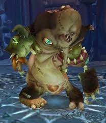

Festergut
| Festergut | |
|---|---|
|  | |
| Race | Flesh Beast (Undead)" |
| Level | ?? Boss |
| Reaction | Alliance/Horde |
| Loction | Plagueworks(Icecrown Citidel) |
| Status | Killable |
{kind=link}
Festergut " is a boss in the Plagueworks wing of the Icecrown Citadel raid. It's mainly a DPS race / gear check. He is very similar to Patchwork from the raid: Naxxramus"
-
1.
Abilities
- 1.1 10-Man Abilities
- 1.2 25-Man Abilities
-
2.
Strategy
-
2.1
Positioning and Movement
- 2.1.1 Static Spores
- 2.1.2 Static Collapse Points
-
2.2
Tanking and Healing
- 2.2.1 Setup and Damage Input
- 2.2.2 Cooldown Rotation
- 2.2.3 Gastric Bloat and Gastric Explosion
- 2.2.4 Healing
- 2.3 Tips and Tricks
- 2.4 Heroic Difficulty
-
2.1
Positioning and Movement
25-Man Abilities
- Gas Spore - Unleashes a Gas Spore, inflicting 3 random targets with a gaseous spore. The Spore will explode after 12 seconds, inflicting 1,950 to 2,050 damage to all nearby friends. The damage from the Gas Spore builds the targets immune system, giving them a 25% resistance to the blight for 2 minutes. Stacks up to 3 times. Instant, 18-second cooldown.
- Gaseous Blight - The Gaseous Plague inflicts 4,388 to 4,612 Shadow damage to all nearby players.
-
Inhale Blight - Inhales the Gaseous Blight in the room, increasing damage dealt and attack speed by 25%. 3.5-second cast.
- Pungent Blight - Violently releases the Gaseous Blight, dealing 63,375 to 66,625 Shadow damage to all enemy players, releasing the deadly Blight back into the room. 3-second cast.
- Vile Gas - Inflicts a Vile plague in targeted area, inflicting 4,875 to 5,125 damage every 2 seconds for 6 seconds. The plague causes the infected targets to vomit uncontrollably, inflicting 3,900 to 4,100 damage to nearby allies. Does not affect melee if there are at least 3 ranged players
-
Gastric Bloat - Inflicts 12,188 to 12,812 Nature damage to the target. Damage done by affected increased by 10% per application.
Causes Gastric Explosion, immediately killing the player, if it reaches 10 stacks. Lasts 100 seconds.
- Gastric Explosion - Immediately kills the affected player, and does 29,250 to 30,750 shadow damage to all players in a 10 yard range.
10-man Abilities
- Gas Spore - Unleashes a Gas Spore, inflicting 3 random targets with a gaseous spore. The Spore will explode after 12 seconds, inflicting 1,950 to 2,050 damage to all nearby friends. The damage from the Gas Spore builds the targets immune system, giving them a 25% resistance to the blight for 2 minutes. Stacks up to 3 times. Instant, 18-second cooldown.
- Gaseous Blight - The Gaseous Plague inflicts 2,925 to 3,075 Shadow damage to all nearby players.
-
Inhale Blight - Inhales the Gaseous Blight in the room, increasing damage dealt and attack speed by 25%. 3.5-second cast.
- Pungent Blight - Violently releases the Gaseous Blight, dealing 63,375 to 66,625 Shadow damage to all enemy players, releasing the deadly Blight back into the room. 3-second cast.
- Vile Gas - Inflicts a Vile plague in targeted area, inflicting 3,900 to 4,100 damage every 2 seconds for 6 seconds. The plague causes the infected targets to vomit uncontrollably, inflicting 3,900 to 4,100 damage to nearby allies. Does not affect melee if there are at least 3 ranged players
-
Gastric Bloat - Inflicts 9,750 to 10,250 Nature damage to the target. Damage done by affected increased by 10% per application.
Causes Gastric Explosion, immediately killing the player, if it reaches 10 stacks. Lasts 100 seconds.
- Gastric Explosion - Immediately kills the affected player, and does 29,250 to 30,750 shadow damage to all players in a 10 yard range.
Strategy
Editor Mode: +
test